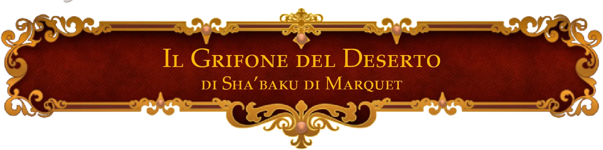

Campagne di Fillo
Nuove merci evidenziate con freccia di questo colore
Merci tornate disponibiili evidenziate con freccia di questo colore
AMPIAMENTE CONSIGLIATO
Nel sito degli strumenti, andare dal menu in alto su Utilities -> Homebrew Manager, e poi il tasto blu “Get Homebrew”, e cercare “kibbles crafting” e cliccare su “Kibbles’ Crafting Guide”. Molto più comodo del PDF, e permette inoltre di vedere nell’elenco i vari oggetti personalizzati, come scudi a torre, bracciali, ecc.
Anche le tabelle del crafting in un formato più facile da cercare.
Negozi
- Indice
Alcune merci sono “su richiesta” perchè sono di uso comune, ma generalmente possono craftare tutte le altre cose craftabili se avete materiali ecc.
I vari negozianti vendono direttamente solo le cose elencate nella tabella, oppure oggetti base che abbiano senso; altri magici se non elencati no. Però alcuni sanno costruire oggetti, vedi sotto.
Per riferimento a prezzi di crafting vedi Regole/Crafting e il PDF gratuito.
Gli oggetti sono presenti o sul pdf del crafting gratuito linkato sopra, oppure sul manuale completo linkato sul drive (doc “link a manuali”), oppure sull’altro sito sempre usando le cose incluse nel drive. Quelli che riesco/ho voglia li metto pure qui sul sito, nel caso non possa linkare la fonte originale per ragioni.
Negozianti costruttori
Arcanerie Diaboliche di Mavreus Vessac
Artefice tiefling decisamente impulsivo
Una piccola modifica qua e… oh no. Però che figata!

Gestore: Mavreus Vessac
Costruttore
Discipline:
- Incantatore: CD 22
- Inventore: CD 22
- Scriba di rune, accademico: CD 22
- Ingegnere: CD 20
- Creatore di bacchette magiche: CD 20
- Intagliatore: CD 18
- Carpentiere: CD 17
- Fabbro: CD 16
Informazioni
Negozio
| Nome | Descrizione | Prezzo | Rarità | Quantità |
|---|---|---|---|---|
| Lanterna a lente sporgente | luce cono 18m fioca 36m | 10 | - | 5 |
| Lanterna coperta | luce 9m fioca 18m | 5 | - | 5 |
|
|
2d6, leggera, ricarica, misfire 1 | 250 | - | 0 |
|
|
1d8, colpisci due creature adiacenti, exo | 200 | - | 0 |
| Ordinario bastone da passeggio | bastone/balestra | 180 | comune | 1 |
| Rampino | aggancia oggetti o creature | 7 | comune | 7 |
| Rampino migliorato | ^ | 100 | non com. | 1 |
|
|
Riproduce musica | 80 | comune | 0 |
| Armi +1 (qualunque arma) | +1 a TPC e danni | base + 500 | non com. | 6 |
| Borsa conservante | più grande all'interno | 1000 | non com. | |
| Borsa dei trucchi | creature casuali | 520 | non com. | 3 |
| Guanti del potere orchesco | 19 FOR (s) | 500 | non com. | 2 |
| Stivali elfici | vant. furtività suono | 470 | non com. | 1 |
| Runa dell’Abilità | competenza in abilità e vantaggio 1/giorno (s) | 500 | non com. | 2 |
| Lenti dell’aquila | (s) | 500 | non com. | 1 |
| Stivali alati | (s) | 1500 | non com. | 1 |
| Lanciafiamme dell’alchimista | 1000 | raro | 1 | |
| Fuoco dell’alchimista | 20 | comune | 9 | |
| Mantello della protezione | (s) | 2000 | raro | 2 |
| Scudo +2 | 2000 | raro | 1 | |
| Arpione a vapore | +1, e attacco speciale per tirare gente | 1600 | raro | 1 |
| Balestra a fuoco rapido | +2, attacco bonus extra (s) | 6500 | molto raro | 1 |
|
|
(s) | 2800 | molto raro | 0 |
| Munizioni avanzate | varia | --- | --- | |
| Materiali | ||||
| Essenza arcana rara | - | 700 | raro | 2 |
| Essenza primale rara | - | 700 | raro | 1 |
| Essenza divina rara | - | 700 | raro | 1 |
| Essenza comune (gemma draconica di Eberron, Syberys, Khyber) | - | 45 | comune | 56 |
| Essenza arcana non comune | - | 150 | non comune | 5 |
| Inchiostro magico raro | - | 200 | raro | 5 |
| Inchiostro magico non comune | - | 40 | non comune | 13 |
| Inchiostro magico comune | - | 15 | comune | 14 |
| Reagente comune | - | 15 | comune | - |
| Reagente non comune | - | 40 | non comune | 24 |
| Reagente raro | - | 200 | raro | 5 |
Oltre a quelli elencati vende anche tutti gli oggetti di basso prezzo nella sezione tinkering del manuale completo del crafting.
Il Grifone del Deserto
Studioso e mercante di oggetti magici
Benvenuti, benvenuti. Ogni merce qua ha la sua storia, sapete?

Gestore: Shaba-ku di Marquet, con Cyd O’neal che assiste
La sua offerta di oggetti magici cambia spesso. Ogni oggetto ha una storia, che sarà ben felice di raccontare.
Negozio
- leggendario
- molto raro
- raro
- non comune
- comune
| Nome | Descrizione | Sintonia | Prezzo |
|---|---|---|---|
| Leggendario | |||
Arborea è il piano esterno del Caos e del Bene. Natura incontaminata, e si dice origine degli elfi e dominio dell’Arcicuore. |
5.000 | ||
Una delle Vestigia della Divergenza, armatura di giada e di scaglie di drago nero. Un tempo indossata da J’mon Sa’ord, Anima della Città dei Gioielli, e sovrano eterno di Ank’harel, fiore del deserto di Marquet. |
x | 100.000 | |
| Molto raro | |||
I lamenti dall’oltretomba riecheggiano ad ogni tiro della sua corda. |
x | 5.500 | |
La marea, che tira alcuni e spinge altri, talvolta con estrema forza. |
x | 8.000 | |
Ammirate la luce emanata da questa armatura, e noterete l’aura aliena che emana. È metallo del mare astrale, e permette di passarci attraverso, all’occorrenza. I più importanti pirati gith indossano armatura di questo metallo. |
x | 10.000 | |
Le fredde terre dell’isola di Eiselcross sono origine di ogni mistero e meraviglia. Negli ultimi anni, spedizioni nella città di Aeor hanno portato a numerose scoperte di tecnologia dell’Epoca Arcana, ancora segrete ai più a parte rare fughe di notizie. |
9.000 | ||
Il primo errore che il nemico della monaca ashari Lyara la Cenere era dirle che non poteva riuscire a sollevare quel bastone. Il secondo errore era dirle che doveva metterlo giù. |
6.500 | ||
| Raro | |||
…e si dice che il capitano di quella ciurma, a cui apparteneva questa giacca, uccidesse persone con i suoi pesanti insulti. Una ciurma particolare. |
x | 700 | |
DIPLOMAZIA! Cosi soleva dire il proprietario di questi guanti, dicono. |
barbaro | 1.200 | |
Posseduto da Istredd il Camaleonte. Un famosissimo spadaccino-mago, letale assassino e mercenario schietto. Bastavano voci della sua presenza in un palazzo per rendere chiunque sospettoso di impostori. E si dice che ora sia anche la sua, di essenza, a risiedere in questo anello. |
x | 2.000 | |
Si dice che i diavoli delle catene controllino le catene. Poteri così specifici e all’apparenza arbitrari non possono essere studiati rigorosamente, capendo cosa nella composizione arcana di una catena permetta questo fenomeno, ma nel significato metaforico, che con creature esterne come diavoli e angeli assume un valore reale. |
x | 2.000 | |
Il Piano Astrale, o Mare Astrale, dove ogni pensiero è realtà, e la realtà è pensiero. La forza di volontà permette di spostarsi in luoghi che qua possiamo solo immaginare. |
stregone | 3.500 | |
“Me lo ha detto un uccellino” è una frase comune, ma è in realtà possibile, con certe capacità. Questo diadema lo rende molto più facile. Solo un avvertimento: non è piacevole scoprire di cosa cantano normalmente gli uccellini. |
2.000 | ||
| Non comune | |||
Balestra leggera +1
|
Vendutami 7 anni or sono da un avventuriero particolare, poco prima dei bizzarri eventi che sono coincisi con l’arrivo delle Nebbie del Lutto. Ero presente, sapete. |
500 | |
Tuc Saltolesto era un famoso predone, che saltava a destra e manca. Questo finchè non cadde sulla lancia della guardia. |
x | 325 | |
Chi vuole tirare cento pugni, impara bene da chi ha cento mani. |
300 | ||
Un gruppo particolare di pirati nell’oceano Lucidiano usava questi anelli per arrembare navi a piedi… |
400 | ||
| Comune | |||
I nobili guerrieri la usano sempre per i gala dopo giornate di lotta. |
25 | ||
Anche i vestiti che ho addosso funzionano così, in realtà. Necessario per il mio lavoro. |
60 | ||
Gli insetti da queste parti sono pochi ma davvero fastidiosi. Un goblin nelle paludi mi ha venduto questo piccolo ma utilissimo cimelio. |
60 | ||
Apprezzata da molti per sedersi ad ammirare il panorama. |
50 | ||
| Venduti | |||
Mastro Ner Tör
Fabbro mutante della gilda
Hrrm.
Gestore: Mastro Ner Tör. Orco e tiefling mutante, numerose corna ovunque.
Lavoratore della gilda: offre sconto o extra a membri della gilda.
Costruttore
Discipline
- Fabbro: CD 23
- Carpentiere: CD 20
Moltiplicatore di prezzo: 85%
Informazioni
Negozio
| Nome | Descrizione | Prezzo | Rarità | Quantità |
|---|---|---|---|---|
| Scudo a torre | 1/2 copertura in cono o 1 nemico | 45 | comune | 2 |
| Scudo spinato | anche arma 1d4 | 35 | comune | 1 |
| Bracciali da parata | Reazione: +2 CA | 12 | comune | 3 |
| Bracciali da parata di adamantio | ^ e se tiro = CA rompe arma | 520 | raro | 1 |
| Olio argenteo | per licantropi, demoni ecc. | 18 | comune | 3 |
| Ascia da battaglia aerodinamica | lanciabile | 70 | comune | 1 |
| Falcione con incavo | slot gemma magica per effetti | 70 | comune | 1 |
| Spada lunga a due lame | meno danni e attacco bonus | 300 | comune | 1 |
| Giaco di maglia di mithril | +1 bonus Des. CA | 200 | non com. | 2 |
| Scudo +1 | 1000 | non com. | 2 | |
| Armatura +1 (su richiesta) | base + 2500 | non com. | - | |
| Pugnale di ferronero | vant. al buio | 80 | non com. | 2 |
| Cotta di maglia di stahlrim (ice steel) | resistenza a fuoco | 1500 | non com. | 1 |
| Mezza armatura perfetta | Rid. danni 2 | 6000 | raro | 1 |
| Altre armi e armature modificate | Effetti vari (esempi qua) | varia | - | - |
| Materiali | ||||
| Lingotto di ferro | - | 1 | comune | 25 |
| Lingotto di acciaio | - | 2 | comune | 25 |
| Lingotto di mithril | - | 30 | non comune | 18 |
| Lingotto di adamantio | - | 60 | non comune | 2 |
| Lingotto di ferronero (darksteel) | - | 60 | non comune | 4 |
| Lingotto di stahlrim (icesteel) | - | 60 | non comune | 5 |
| Lingotto di covolt | - | 60 | non comune | 5 |
| Lingotto di phyrion (firesteel) | - | 60 | non comune | 12 |
Altri oggetti
Alchimia Botanica
Alchimista, e seguace di branca druidica particolarmente scientifica
La Scienza Botanica è un’arte, una magia, e una tecnologia, modestamente.

Gestore: Torgga Foglianera, nana F, barbuta, Generalmente volto coperto da simil-maschera da saldatore, strano dato il lavoro per un non esperto. Pezzi di armatura di metallo verde scuro, con parti di legno.
Sul cortile a lato del negozio, con terra relativamente verde che pochi giorni prima dell’apertura così non era, sono presenti numerosi particolari fiori e piante, molti in apparente movimento come una sorta di macchina. Diversi raggi magici vengono lanciati dai fiori, diversi dentro al negozio, sul retro.
Costruttore
Discipline
- Alchimista: CD 23
- Erborista: CD 23
- Veleni: CD 23
Negozio
| Nome | Descrizione | Prezzo | Rarità | Quantità |
|---|---|---|---|---|
| Fulmine liquido | 640 | raro | 1 | |
| Pozione di resistenza necrotica | 250 | non comune | 1 | |
| Pozione di resistenza da fuoco | 280 | non comune | 1 | |
| Pozione di resistenza velenosa | 300 | non comune | 1 | |
| Pozione della forza dei giganti (colline) | 260 | non comune | 1 | |
| Pozione della forza dei giganti (pietra) | 600 | raro | 1 | |
| Pozione di eroismo | 500 | raro | 1 | |
| Pozione di velocità | 2500 | molto raro | 1 | |
| Pozione di vitalità | 950 | molto raro | 1 | |
| Essenza d’ira | 500 | raro | 1 | |
| Pozione della breve carica | 180 | non comune | 2 | |
| — | — | — | — | — |
| Pozione di cura (10/2d4+2) | 50 | comune | - | |
| Pozione di cura maggiore (20/4d4+4) | 130 | non comune | 5 | |
| Pozione di cura superiore (40/8d4+8) | 540 | raro | 2 | |
| Pozione di cura suprema (60/10d4+20) | 2000 | molto raro | 1 | |
| Unguento di Keoghtom (cura) | 300 | non comune | 1 | |
| Fuoco dell’alchimista | 20 | comune | 9 | |
| Fuoco alchemico | 50 | comune | 3 | |
| Napalm alchemico | 70 | comune | 2 | |
| Acido alchemico | 50 | comune | 5 | |
| Acido alchemico maggiore | 150 | non comune | 1 | |
| Olio argenteo | 20 | comune | - | |
| Olio gelido | 80 | comune | 4 | |
| Olio bruciante | 45 | comuen | 2 | |
| Veleni vari (da manuale base) | varia | varia | varia | |
| Esplosivi vari (non ho tempo di segnarli a parte il seguente) | varia | varia | varia | |
| Alcol nanico | 25 | comune | 3 | |
| Pacco di polvere da scoppio | 55 | comune | 9 | |
| Polvere fumogena | 45 | comune | 11 | |
| Esplosivo semplice | 150 | comune | 4 | |
| Esplosivo maggiore | 280 | non comune | 1 | |
| Telaio da granata | 75 | non comune | 4 | |
|
|
- | non comune | 0 | |
|
|
- | raro | 0 | |
| Antidoto | 75 | comune | - | |
| Materiali | ||||
| Reagente comune | - | 15 | comune | - |
| Reagente non comune | - | 40 | non comune | 25 |
| Reagente raro | - | 200 | raro | 11 |
| Essenza primale comune | - | 45 | raro | - |
| Essenza primale non comune | - | 150 | raro | 19 |
| Essenza primale rara | - | 700 | raro | 3 |
| Essenza primale molto rara | - | 7000 | molto raro | 1 |
Negozi temporanei
Negozi Piltover
La Fiera del Domani offre numerose meraviglie
I vari negozi trovati a Piltover.
Negozi generali
| Nome | Descrizione | Prezzo | Rarità | Quantità |
|---|---|---|---|---|
| Dark Fathom Armor | +1, leggera, subacquea, tentacoli evard (s) | 11000 | very rare | 1 |
| Edible Book of Recipes | mangia pagine, vita max extra | 8500 | very rare | 1 |
| Potion of Speed | haste no concentrazione | 6150 | very rare | 1 |
| Blast Disk (Rare) | Mina magica con spell | 500 | rare | 2 |
| Chi-Balancing Tea | -charme, paura, +1d4+1ki | 270 | rare | 1 |
| Emberlit Boots | res fuoco, scia fuoco (s) | 6500 | rare | 1 |
| Potion of Maximum Power | max dadi danno spell 1 volta | 500 | rare | 2 |
| Potion of Spell Recovery | recupera 1d3+3 slot | 1500 | rare | 1 |
| Ring of Lightning Resistance | res fulmine (s) | 6000 | rare | 1 |
| Siege Staff | armi da assedio in una staffa (s) | 1320 | rare | 1 |
| Staff of the Mirage | magie illusione varie (max 5lv) (s) | 2000 | rare | 1 |
| Wand of Wonder | 1d100 magie casuali anche forti (s) | 2100 | rare | 1 |
| Harvest | +1d6 su piante | 200 | uncommon | 1 |
| Ring of Barrels | evoca barili per catturare (s) | 250 | uncommon | 1 |
| Ring of Salvation | supera 1 tiro salv / riposo breve (s) | 500 | uncommon | 2 |
| Ring of Swimming | 12m vel nuoto | 450 | uncommon | 3 |
| Wand of Web | 7 usi di web (s) | 600 | uncommon | 1 |
| Waterskin of Voices | imita 25 parole | 250 | uncommon | 1 |
| Antimagic Bell | Suona in antimagia | 80 | common | 3 |
| Battle Rod | x2 range trucchetti | 100 | common | 3 |
| Borbos’s Joyous Wand of Color | scrivi in aria | 50 | common | 1 |
| Cloak of Many Fashions | cambia stile vestiti | 80 | common | 3 |
| Heward’s Handy Spice Pouch | spezie gratis | 40 | common | 3 |
| Lesser Wand of Cantrip (stone forming) | 3 cariche | 30 | common | 1 |
| Lesser Wand of Cantrip (decaying touch) | 3 cariche | 30 | common | 1 |
| Lesser Wand of Cantrip (A scelta) | 3 cariche | 70 | common | 2 |
| Perfume of Bewitching | vant Car | 40 | common | 3 |
| Tankard of Sobriety | no ubriachezza da qua | 25 | common | 2 |
Tatuaggi
Un tatuaggio magico permette di esprimere sè stessi in nuovi modi: artigli oscuri in faccia ai propri nemici sono sicuramente un modo di caratterizzare la propria personalità.
| Nome | Descrizione | Prezzo | Rarità | Quantità |
|---|---|---|---|---|
| Barrier Tattoo (Large) | 18 CA (s) | 19000 | very rare | 5 |
| Ghost Step Tattoo | bonus -> incorporeo 1 turno (s) | 3000 | very rare | 5 |
| Lifewell Tattoo | res necrotici, res orchesca 1/RL (s) | 6000 | very rare | 5 |
| Barrier Tattoo (Medium) | 15 + min(Des,2) CA (s) | 10000 | rare | . |
| Shadowfell Brand Tattoo | scurovis + reaz per 1/2 danni (s) | 2000 | rare | 5 |
| Spellwrought Tattoo (4th Level) | 1 cast magia lv4 | 1600 | rare | - |
| Barrier Tattoo (Small) | 12 + Des CA (s) | 2000 | uncommon | - |
| Coiling Grasp Tattoo | tentacoli grabbini (s) | 700 | uncommon | - |
| Eldritch Claw Tattoo | ravvicinato range extra + 1d6 danni extra (s) | 1000 | uncommon | - |
| Spellwrought Tattoo (2nd Level) | 1 casta magia vl2 | 600 | uncommon | - |
| Spellwrought Tattoo (3rd Level) | 1 cast magia lv3 | 1000 | uncommon | - |
| Illuminator’s Tattoo | scrivi con dita, opz invisibile (s) | 500 | common | - |
| Masquerade Tattoo | disguise self 1/RL (s) | 500 | common | - |
| Spellwrought Tattoo (1st Level) | 1 cast magia lv1 | 300 | common | - |
Nota: i tatuaggi magici degli incantesimi possono avere un qualunque incantesimo a scelta, al momento della creazione.
Negozi Port Damali
Negozio di oggetti magici che Nikolaya ha trovato nella città portuale di Port Damali.
Negozio
| Nome | Descrizione | Prezzo | Rarità | Quantità |
|---|---|---|---|---|
| Wand of Puppetry | fili per debuffare umanoide o domina persona (s) | 10200 | very rare | 1 |
| Coat of the Crest | +1 CA, cariche per res come reaz (s) | 1500 | rare | 2 |
| Knight’s Standard of Vigor | picca, +1, comp vs veleno, cura extra (s) | 1000 | rare | 1 |
| Bag of Holding | la sola e unica | 1000 | uncommon | 3 |
| Bag of Tricks (Gray) | spawna creature | 520 | uncommon | 1 |
| Bag of Tricks (Rust) | spawna creature | 520 | uncommon | 1 |
| Gravity | runa: no danni caduta, levitare 1/rl (s) | 320 | uncommon | 3 |
| Potent Contact Poison | 4d4 + avvelenato | 100 | uncommon | 1 |
| Talyard the Great’s Wand of Power | magie, funziona da ubriaco soltanto | 180 | uncommon | 1 |
| Flickering Ruby | socket arma, 1 minuto 1d4 fuoco 1/rl | 125 | common | 1 |
| Lesser Wand of Cantrip (illusionary dart) | 3 cariche | 30 | common | 1 |
| Lesser Wand of Cantrip (candy blast) | 3 cariche | 30 | common | 1 |
| Medal of Wit | vant int 1 ora, monouso | 20 | common | 1 |
| Prism Glasses | colore scurovisione, fix daltonismo | 90 | common | 4 |
| Wand of Chores | prestidigigigitazione | 160 | common | 2 |